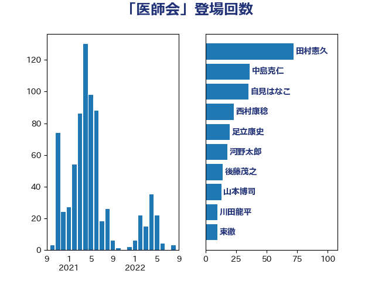

単語「医師会」

| 田村憲久 | 自由民主党 | 72 回 |
| 中島克仁 | 立憲民主党 | 36 回 |
| 自見はなこ | 自由民主党 | 35 回 |
| 西村康稔 | 自由民主党 | 23 回 |
| 足立康史 | 日本維新の会 | 20 回 |
| 河野太郎 | 自由民主党 | 18 回 |
| 後藤茂之 | 自由民主党 | 14 回 |
| 山本博司 | 公明党 | 13 回 |
| 川田龍平 | 立憲民主党 | 10 回 |
| 東徹 | 日本維新の会 | 10 回 |
| 長妻昭 | 立憲民主党 | 9 回 |
| こやり隆史 | 自由民主党 | 8 回 |
| 吉田忠智 | 立憲民主党 | 8 回 |
| 宮本徹 | 日本共産党 | 8 回 |
| 徳永エリ | 立憲民主党 | 7 回 |
| 田村まみ | 国民民主党 | 7 回 |
| 菅義偉 | 自由民主党 | 7 回 |
| 田村智子 | 日本共産党 | 6 回 |
| 仁木博文 | 無所属 | 5 回 |
| 塩村あやか | 立憲民主党 | 5 回 |
| 山井和則 | 立憲民主党 | 5 回 |
| 打越さく良 | 立憲民主党 | 5 回 |
| 松山政司 | 自由民主党 | 5 回 |
| 柚木道義 | 立憲民主党 | 5 回 |
| 武田良太 | 自由民主党 | 5 回 |
| 倉林明子 | 日本共産党 | 4 回 |
| 吉田統彦 | 立憲民主党 | 4 回 |
| 小池晃 | 日本共産党 | 4 回 |
| 石橋通宏 | 立憲民主党 | 4 回 |
| 菅直人 | 立憲民主党 | 4 回 |
| 高橋千鶴子 | 日本共産党 | 4 回 |
| 上川陽子 | 自由民主党 | 3 回 |
| 中川貴元 | 自由民主党 | 3 回 |
| 塩田博昭 | 公明党 | 3 回 |
| 小西洋之 | 立憲民主党 | 3 回 |
| 山添拓 | 日本共産党 | 3 回 |
| 山田美樹 | 自由民主党 | 3 回 |
| 平井卓也 | 自由民主党 | 3 回 |
| 横沢高徳 | 立憲民主党 | 3 回 |
| 比嘉奈津美 | 自由民主党 | 3 回 |
| 江田憲司 | 立憲民主党 | 3 回 |
| 白石洋一 | 立憲民主党 | 3 回 |
| 礒崎哲史 | 国民民主党 | 3 回 |
| 上田清司 | 国民民主党 | 2 回 |
| 下村博文 | 自由民主党 | 2 回 |
| 井坂信彦 | 立憲民主党 | 2 回 |
| 国光あやの | 自由民主党 | 2 回 |
| 寺田静 | 無所属 | 2 回 |
| 山下貴司 | 自由民主党 | 2 回 |
| 岡本三成 | 公明党 | 2 回 |
| 岸田文雄 | 自由民主党 | 2 回 |
| 島村大 | 自由民主党 | 2 回 |
| 末松義規 | 立憲民主党 | 2 回 |
| 梅村聡 | 日本維新の会 | 2 回 |
| 森田俊和 | 立憲民主党 | 2 回 |
| 橋本聖子 | 無所属 | 2 回 |
| 浜地雅一 | 公明党 | 2 回 |
| 石井章 | 日本維新の会 | 2 回 |
| 笠浩史 | 無所属 | 2 回 |
| 藤井比早之 | 自由民主党 | 2 回 |
| 谷川とむ | 自由民主党 | 2 回 |
| 辻元清美 | 立憲民主党 | 2 回 |
| 道下大樹 | 立憲民主党 | 2 回 |
| 野中厚 | 自由民主党 | 2 回 |
| 三谷英弘 | 自由民主党 | 1 回 |
| 中谷一馬 | 立憲民主党 | 1 回 |
| 伊藤俊輔 | 立憲民主党 | 1 回 |
| 伊藤孝江 | 公明党 | 1 回 |
| 伊藤岳 | 日本共産党 | 1 回 |
| 佐藤英道 | 公明党 | 1 回 |
| 加藤勝信 | 自由民主党 | 1 回 |
| 古屋範子 | 公明党 | 1 回 |
| 吉良よし子 | 日本共産党 | 1 回 |
| 和田政宗 | 自由民主党 | 1 回 |
| 城井崇 | 立憲民主党 | 1 回 |
| 塩崎彰久 | 自由民主党 | 1 回 |
| 塩川鉄也 | 日本共産党 | 1 回 |
| 大塚耕平 | 国民民主党 | 1 回 |
| 大島敦 | 立憲民主党 | 1 回 |
| 宮本岳志 | 日本共産党 | 1 回 |
| 小宮山泰子 | 立憲民主党 | 1 回 |
| 小林鷹之 | 自由民主党 | 1 回 |
| 小泉進次郎 | 自由民主党 | 1 回 |
| 山下芳生 | 日本共産党 | 1 回 |
| 山本剛正 | 日本維新の会 | 1 回 |
| 山田勝彦 | 立憲民主党 | 1 回 |
| 山田宏 | 自由民主党 | 1 回 |
| 川合孝典 | 国民民主党 | 1 回 |
| 杉尾秀哉 | 立憲民主党 | 1 回 |
| 柴田巧 | 日本維新の会 | 1 回 |
| 橋本岳 | 自由民主党 | 1 回 |
| 武井俊輔 | 自由民主党 | 1 回 |
| 池下卓 | 日本維新の会 | 1 回 |
| 河西宏一 | 公明党 | 1 回 |
| 浅田均 | 日本維新の会 | 1 回 |
| 滝波宏文 | 自由民主党 | 1 回 |
| 熊谷裕人 | 立憲民主党 | 1 回 |
| 玉木雄一郎 | 国民民主党 | 1 回 |
| 田島麻衣子 | 立憲民主党 | 1 回 |
| 矢倉克夫 | 公明党 | 1 回 |
| 石垣のりこ | 立憲民主党 | 1 回 |
| 石川博崇 | 公明党 | 1 回 |
| 石川大我 | 立憲民主党 | 1 回 |
| 石川香織 | 立憲民主党 | 1 回 |
| 神谷裕 | 立憲民主党 | 1 回 |
| 福島みずほ | 社会民主党 | 1 回 |
| 笠井亮 | 日本共産党 | 1 回 |
| 篠原孝 | 立憲民主党 | 1 回 |
| 緑川貴士 | 立憲民主党 | 1 回 |
| 羽生田俊 | 自由民主党 | 1 回 |
| 西村智奈美 | 立憲民主党 | 1 回 |
| 西田実仁 | 公明党 | 1 回 |
| 角田秀穂 | 公明党 | 1 回 |
| 谷合正明 | 公明党 | 1 回 |
| 輿水恵一 | 公明党 | 1 回 |
| 近藤和也 | 立憲民主党 | 1 回 |
| 里見隆治 | 公明党 | 1 回 |
| 野田聖子 | 自由民主党 | 1 回 |
| 阿部知子 | 立憲民主党 | 1 回 |
| 音喜多駿 | 日本維新の会 | 1 回 |
| 馬場伸幸 | 日本維新の会 | 1 回 |
| 高木啓 | 自由民主党 | 1 回 |